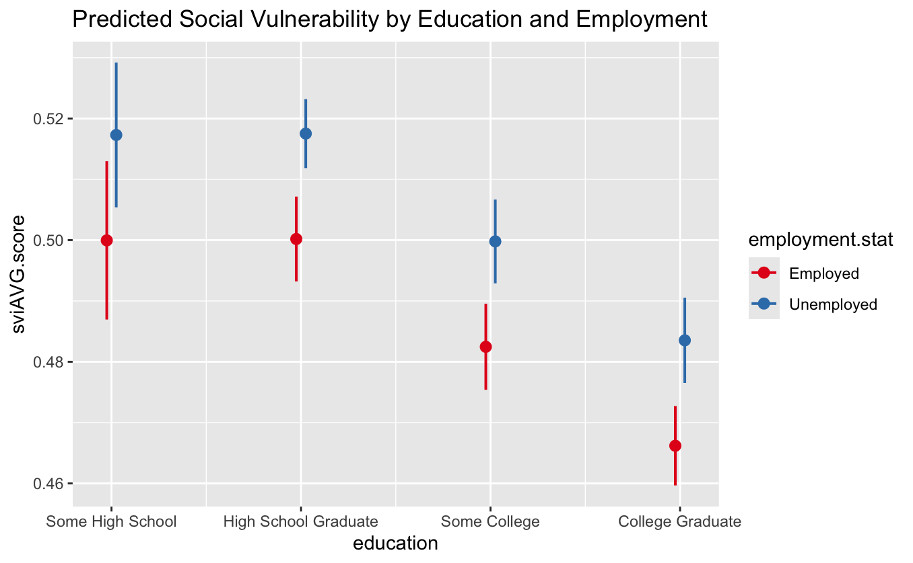
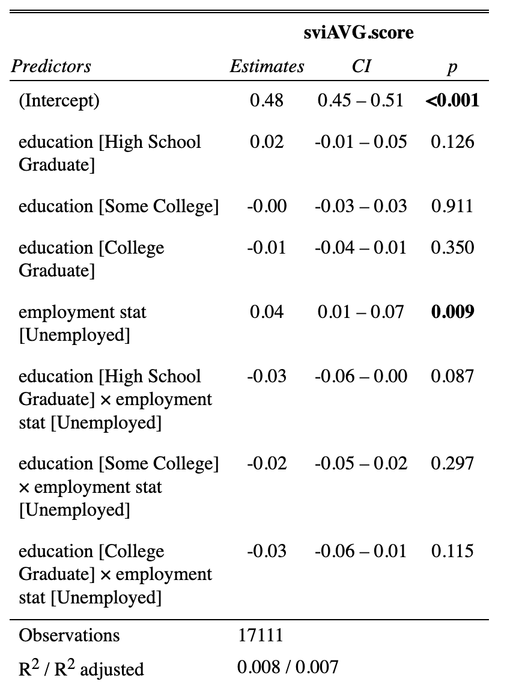
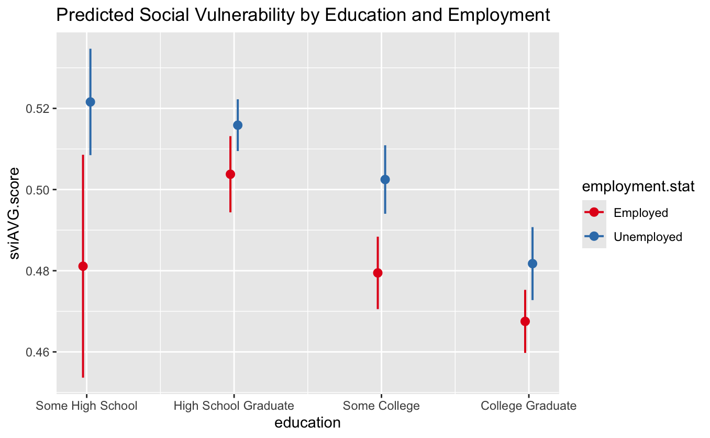

Social stratification plays a crucial role in determining how structural barriers and societal institutions in the personal, private, and professional social sectors limit an individual's socioeconomic trajectory in society. This stratification, influenced by several ascribed and achieved social characteristics, significantly impacts an individual's social mobility. For minority populations, this often means an increasing amount of social vulnerability due to socioeconomic stratification, racism, and inequality. Social stratification effectively confines minority populations to specific social outcomes and characteristic patterns, such as federal, state, or local trends, that can provide statistically significant correlations to the relationship between social vulnerability, socioeconomic outcomes, and residential region.
This study aims to comprehensively investigate The Social Vulnerability Index (SVI) estimates of Puerto Rican citizens and their associated demographic data. By leveraging reputable data sources, including the 5-year American Community Survey (ACS) (2018-2022), the Social Vulnerability Index (SVI) (2022), and the Public Use Microdata Area (PUMA) (2022), I seek to uncover relationships between social vulnerability and key socioeconomic variables at the respondent level. The potential impact of this study is massive, as it aims to inform forthcoming research and policy, particularly in addressing the socioeconomic challenges faced by Minority populations in Puerto Rico at the municipal level, underlining the significance of our research in shaping future policies and interventions.
Literature Review
The literature emphasizes the disproportionate impact of natural disasters like Hurricane Maria on Puerto Ricans, highlighting migration dynamics, climate-induced displacement, housing insecurity, and economic pressures on marginalized communities (Acosta et al., 2020; Negrón et al., 2024; Rivera, 2020). These studies outline the importance of understanding the demographic and socioeconomic factors contributing to vulnerability, such as migration, income inequality, and limited access to resources.
The literature emphasizes that Puerto Rican populations are often understudied, resulting in a lack of comprehensive studies and data about them. Consequently, the use of existing data to guide disaster preparedness and relief efforts is not as extensive or effective as it could be. Hurricane Maria highlighted these issues, prompting my research into the socioeconomic stratification of Puerto Rican adults.The literature emphasizes that Puerto Rican populations are often understudied, resulting in a lack of comprehensive studies and data about them. Consequently, the use of existing data to guide disaster preparedness and relief efforts is not as extensive or effective as it could be. Hurricane Maria highlighted these issues, prompting my research into the socioeconomic stratification of Puerto Rican adults.
Data Review
This study employs three reputable data sources, including the 5-year American Community Survey (ACS) (2018-2022), the Social Vulnerability Index (SVI) (2022), and the Public Use Microdata Area (PUMA) (2022).
American Community Survey
The American Community Survey (ACS) is a survey conducted by the U.S. Census Bureau that collects detailed information about people's lives, such as their income, education, employment, and housing. This information assists in understanding the needs of different communities and guides decisions about where to direct resources and services.
Social Vulnerability Index
The Social Vulnerability Index (SVI), developed by the CDC, is a tool used to identify communities that may need more help during disasters like hurricanes, floods, or pandemics. It looks at factors like income, education, housing, and access to healthcare to determine a community's vulnerability. The higher the score, the more vulnerable the community is to harm during a disaster.
Public Use Microdata Area
PUMA stands for Public Use Microdata Areas, which are geographic areas used to report census data. These areas are smaller than counties and are designed to provide more detailed and localized information. PUMA often breaks down the data from the ACS to give a clearer picture of what is happening in specific neighborhoods or regions.
The hypothesis builds upon the literature by addressing key themes related to social vulnerability, socioeconomic inequality, and the structural barriers marginalized populations face, especially in Puerto Rico.
Hypothesis H0
When controlling for variables such as age, ethnicity, and citizenship status in Puerto Rico, a statistically insignificant correlation emerges between an individual's Social Vulnerability Index (SVI) score, education attainment, and employment status. This finding invites further research into additional socioeconomic factors contributing to historically marginalized populations' stratification.
Hypothesis H1
When controlling for variables such as age, ethnicity, and citizenship status in Puerto Rico, a statistically significant correlation exists between an individual's Social Vulnerability Index (SVI) score, education attainment, and employment status. This finding underscores the urgent need for further research to address and alleviate socioeconomic inequality.
The analysis employs linear regression models to examine the relationship between the SVI score and two independent variables: employment status and education attainment.
The first model (Model 1) assesses the direct effects of employment status and education level on the SVI score. Specifically, it employs the formula: SVI score ~ employment status + education attainment to evaluate how each variable individually influences the SVI score.
The second model (Model 2) includes an interaction term between education attainment and employment status, employing the formula SVI score ~ education attainment * employment status. This model aims to test for moderation, exploring whether the relationship between education attainment and an individual's SVI score differs depending on employment status. By including interaction terms, Model 2 allowed for an assessment of how the effect of education attainment on an individual's SVI score might be moderated by whether an individual is employed or unemployed.
Model 1

The results from Model 1 indicate that employment status significantly affects the SVI score, with unemployed individuals showing a higher average SVI score. The coefficient for the unemployed is positive and statistically significant, suggesting that unemployment is associated with increased social vulnerability. However, the direct effects of education level on the SVI score are less clear. The coefficient for education High School Graduates is very small and statistically insignificant, indicating no meaningful effect. Similarly, the negative coefficients for education College and education Graduate suggest that higher levels of education are associated with slightly lower SVI scores. However, these effects are also minor and lack strong significance.
Model 2


In contrast, Model 2, which includes interaction terms, shows that while the main effect of employment status remains significant, the interaction between education and employment status provides further nuance. Specifically, the interaction term for unemployed high school graduates is marginally significant, implying that the effect of unemployment on the SVI score may slightly differ for individuals with a high school education compared to others. However, the interaction terms for college-educated respondents and employment status are not statistically significant, suggesting that the relationship between education attainment and social vulnerability is not strongly influenced by employment status for these groups. Therefore, whether or not a highly educated individual is employed, their social vulnerability remains largely unchanged.
Overall, both models suggest that employment status significantly impacts social vulnerability, but the role of education attainment is less apparent, particularly when considering interactions with employment status.
The results align with the hypothesis of social stratification theory, which posits that ascribed and achieved social characteristics shape socioeconomic trajectories. The significant effects of education attainment and employment status on social vulnerability suggest that these variables partially reflect structural inequalities impacting social vulnerability.
Future studies could combine additional variables, such as housing stability, access to utilities, or disaster preparedness, to expand the scope of this research and determine social vulnerability regarding emergency preparedness, relief, and recovery.
The study examined the relationship between Social Vulnerability Index (SVI) scores, education attainment, and employment status in Puerto Rican citizens. The statistical analysis revealed several significant findings:
Individuals with higher education attainment, such as high school graduates and college-educated respondents, maintained significantly higher SVI scores compared to those with less than a high school education. Furthermore, unemployed individuals demonstrated a modest but statistically significant increase in social vulnerability compared to employed individuals. No statistically significant interaction effects were identified, suggesting that the impact of education on social vulnerability does not vary significantly based on employment status.
While the relationships observed were statistically significant, the results indicate that education attainment and employment status explain only a small proportion of the variation in social vulnerability amongst respondents. These findings support the test hypothesis, as statistically significant relationships were identified between social vulnerability, education attainment, and employment status. However, the model's limited explanatory strength suggests more complex relationships are melding together to increase social vulnerability in some respondents and not others depite these findings.
Bibliography
-
Acosta, Rolando J., Nishant Kishore, Rafael A. Irizarry, and Caroline O. Buckee. 2020. “Quantifying the Dynamics of Migration after Hurricane Maria in Puerto Rico.” Proceedings of the National Academy of Sciences of the United States of America 117(51):32772–78.
-
Centers for Disease Control and Prevention/ Agency for Toxic Substances and Disease Registry/ Geospatial Research, Analysis, and Services Program. CDC/ATSDR Social Vulnerability Index 2022 Database Puerto Rico.
-
Negrón, Rosalyn, Lorena M. Estrada-Martínez, Marisol Negrón, Orlando Maldonado-Meléndez, and Daniel Aldrich. 2024. “Climate Displacement and Migration after Hurricane Maria: Implications for Puerto Ricans’ Mental Health.” Pp. 240–56 in Climate Justice and Public Health, Realities, Responses, and Reimaginings for a Better Future, edited by R. Srikanth and L. Thompson. University of Massachusetts Press.
-
Rivera, Fernando I. 2020. “Puerto Rico’s Population before and after Hurricane Maria.” Population and Environment 42(1):1–3.
-
Robustelli, Tim, Helen Bonnyman, and Yuliya Panfil. 2024. Intersections between Climate Migration and Housing Security in Receiving Communities. New America.
-
Santos-Lozada, Alexis R., Matt Kaneshiro, Collin McCarter, and Mario Marazzi-Santiago. 2020. “Puerto Rico Exodus: Long-Term Economic Headwinds Prove Stronger than Hurricane Maria.” Population and Environment 42(1):43–56.